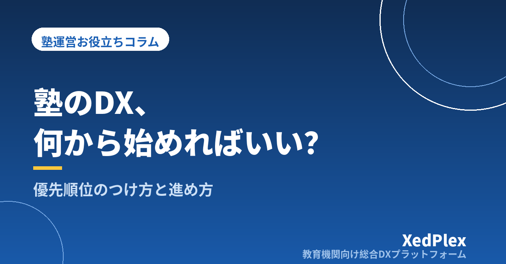

塾のDX、何から始めればいい？｜個人塾のための優先順位のつけ方と3か月の進め方

「これからは塾もDXだ」という話は、業界紙でもセミナーの案内でもよく目にします。ただ、教室をひとりで回している塾長からすると、正直なところ「言いたいことは分かるが、うちは何をすればいいのか」というのが本音ではないでしょうか。タブレットを入れることなのか、映像授業を導入することなのか、システムを契約することなのか。輪郭がはっきりしないまま、日々の授業と事務に追われて1年が過ぎていく──よくある話です。
結論から言えば、小さな塾のDXは「デジタル化する業務を選ぶ作業」です。全部を一度に変える必要はありませんし、そもそも変えなくていい業務もあります。この記事では、何から手をつけるかを決めるための2つの物差しと、多くの個人塾で効果が出やすい最初の3業務、3か月の進め方、そしてやりがちな失敗を整理します。
塾のDXは「システム導入」とは限らない
DXという言葉が分かりにくいのは、目的と手段が混ざって語られるからです。小さな塾の現場に引き寄せると、やることは次の3層に分けられます。
| 層 | やること | 例 |
|---|---|---|
| 1. 記録を残す | 頭の中・紙にしかない情報を、あとから探せる形にする | 生徒名簿、出欠、指導内容、保護者とのやりとりの記録 |
| 2. 手作業を減らす | 毎回同じ手順で作っているものを、自動または半自動にする | 請求書の作成、入退室の連絡、一斉のお知らせ |
| 3. 記録を使って判断する | たまったデータを、指導や面談・経営の判断に使う | 成績の推移を面談で見せる、退塾の兆候に早く気づく |
順番が大切です。1がないまま2や3には進めません。記録が紙とスマホのメモに散らばっている状態でいきなり分析ツールを入れても、入れるデータがないからです。逆に言えば、「まず記録の置き場所を1つにする」だけでも、それは立派なDXの第一歩です。高価なシステムを契約することがDXなのではありません。
優先順位を決める2つの物差し
では、どの業務から手をつけるか。判断材料は2つだけで十分です。
物差し1：どれだけ「繰り返している」か
1回あたりの時間が短くても、毎週・毎月繰り返す作業は年間で見ると大きな塊になります。週1時間の作業は年間で約50時間、月4時間の作業は年間48時間です。一方、年に1〜2回しかない作業は、多少面倒でも後回しで構いません。まずは「今週もやったし、来週もやる」作業を書き出してください。
物差し2：ミスしたときの「手戻りと信頼の損失」が大きいか
もう1つは、間違えたときのダメージです。請求金額の誤り、連絡漏れ、生徒情報の取り違えは、やり直しの手間だけでなく保護者からの信頼を直接削ります。ここは人の注意力ではなく仕組みで守るべき領域です。
この2つを掛け合わせると、着手する順番が自然に決まります。
| ミスの影響が大きい | ミスの影響が小さい | |
|---|---|---|
| 繰り返しが多い | 最優先（請求・入金、保護者への連絡、出欠記録） | 次点（授業準備の教材整理、消耗品の発注） |
| 繰り返しが少ない | ルール化で対応（入塾手続き、月謝改定の告知） | 当面そのままでよい（掲示物の作成など） |
「忙しさの正体」をもう少し細かく分解したい場合は、個人塾の塾長が今日からできる業務効率化で紹介している棚卸し表を先に埋めてみるのが近道です。
最初に着手すると効果が出やすい3つの業務
上の表で「最優先」に入りやすく、かつ小さな塾でも取り組みやすいのが次の3つです。ここから順に進めるのが、遠回りに見えていちばん確実です。
(1) 生徒情報を1か所にまとめる
氏名・学年・連絡先・受講コース・入退塾日といった基本情報を、1つの場所に集約します。これが土台です。名簿がエクセル、連絡先がスマホの電話帳、コース情報が申込書のファイル、という状態だと、コース変更のたびに3か所を直すことになり、どこかが必ず古くなります。エクセル管理をいつまで続けられるかの判断も、この集約ができているかどうかが目安になります。
(2) 保護者への定期連絡を自動で届くようにする
入退室の通知や欠席連絡の受付は、保護者にとって「導入されたことがすぐ分かる」変化です。塾側も、電話の取り次ぎや折り返しが減ります。効果が見えやすいため、次の一歩への納得も得やすい領域です。具体的な方式の比較は紙・カード・QRの比較と保護者通知の仕組み、連絡手段の整理は講師の個人LINE頼みは危険？で扱っています。
(3) 請求・入金を名簿とつなげる
最後がお金まわりです。名簿の受講コースから請求額が組み立てられ、入金の消し込みまで同じ場所で追える状態にします。名簿と請求が別ファイルに分かれている限り、二重更新と請求ミスのリスクは消えません。手順は請求書発行を自動化する3段階にまとめています。
①生徒情報の集約 → ②保護者連絡の自動化 → ③請求・入金の連動
記録の土台をつくり、保護者に見える成果を出し、最後にお金の正確さを固める、という順番です。
3か月の進め方（例）
一度に全部を切り替えると現場が混乱します。生徒数30〜60名程度の塾を想定した、無理のない進め方の一例です。
| 時期 | やること | できていれば合格 |
|---|---|---|
| 1か月目 | 名簿の項目を決めて入力し直す。入力担当と更新タイミング（入塾時・コース変更時）を決める | 最新の生徒情報が1か所で確認できる |
| 2か月目 | 出欠の記録と保護者への通知を運用に乗せる。1〜2週間は従来の方法と並走 | 塾長が手で送っていた連絡が減っている |
| 3か月目 | 請求を名簿と連動させる。初月は従来の計算と金額を突き合わせる | 請求書づくりが半分以下の時間で終わる |
始める時期は、募集や講習が重なる繁忙期を避けるのが鉄則です。新年度直前や夏期講習の直前に切り替えを始めると、慣らし期間が取れずに「やっぱり元のやり方で」となりがちです。季節講習の申込・請求管理で書いたとおり、講習期は事務が最も膨らむ時期でもあります。
よくある失敗と、その避け方
- 全部を一度に変えようとする：名簿・出欠・請求・連絡を同月に切り替え、どこで詰まったのか分からなくなるパターン。1か月に1業務までにとどめます。
- 紙とデジタルの二重運用が続く：「念のため紙も」を続けると、手間が増えるだけで効果が出ません。並走は最長1か月と決め、期限を切って紙をやめます。
- 塾長しか触れない仕組みになる：講師が入力できない設計だと、結局すべてが塾長に戻ってきます。アルバイト講師が5分の説明で使えるかを基準にしてください。
- ツールが増えすぎる：連絡用アプリ、名簿用ソフト、請求用サービスとバラバラに増やすと、転記作業が生まれます。増やす前に「これは今あるものと重複しないか」を確認します。
- 効果を測っていない：導入前に「この作業に月◯時間」とメモしておくと、3か月後に続けるか見直すかを事実で判断できます。
ツールを選ぶ段階に入ったら、機能の多さではなく自塾の基準で比べることが大切です。判断軸は小規模塾のためのシステム選び5つの基準にまとめています。
まとめ
塾のDXは、流行の道具をそろえることではなく、繰り返していて、間違えると痛い業務から順にデジタルに預けていく作業です。まず生徒情報を1か所にまとめ、次に保護者への連絡を自動で届くようにし、最後に請求と名簿をつなげる。この順番なら、教室ひとつ・塾長ひとりでも3か月で形になります。
今日できることは1つだけです。今週やった事務作業を紙に書き出し、「来週もやるか」「間違えたら困るか」の2つで丸をつけてみてください。丸が2つついた作業が、あなたの塾のDXの出発点です。
この記事を書いた運営より
私たちは、個人経営・小規模の学習塾向けに、生徒管理・QRコードでの入退室記録・月次請求・保護者へのLINE/メール通知・AIによる学習支援までをひとつにまとめた教育機関向け総合DXプラットフォーム「XedPlex（ゼドプレックス）」を開発・提供しています。初期費用は0円、料金は生徒1名あたり月額300円（税込）から。生徒50名の塾なら月15,000円（税込）です。全国8つの教室で導入されており、導入塾には紹介ホームページの無料作成も行っています。機能の詳細説明はこちら。
XedPlexの詳細を見る